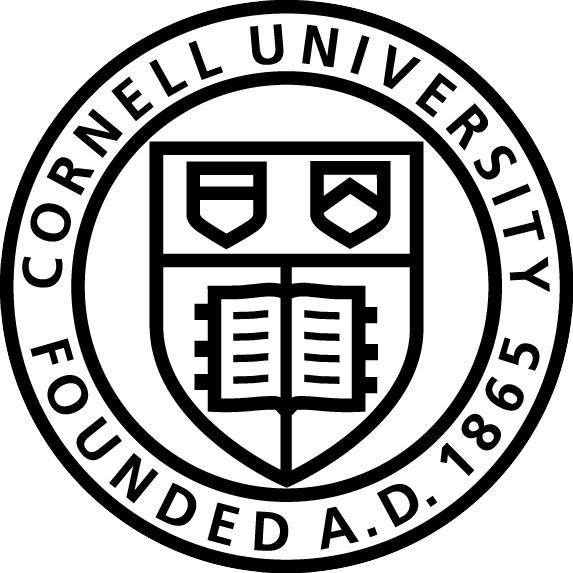

Cornell University
CS 3110 Consultant
August 2014 - Present
I was extremely excited when I was invited to become part of course staff for CS 3110: Data Structures and Functional Programming.
This challenging course, which was my favorite so far at Cornell, is taught in OCaml.
Jobly.it
Front-End Designer
June 2014 - Present
Designed landing page of website for connecting college students and employers, modified Wordpress theme for college recruitment office directory,
and designed various forms of advertising including business cards.